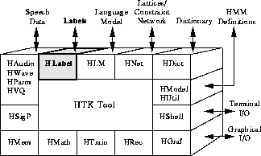

Many of the operations performed by HTK which involve speech data files assume that the speech is divided into segments and each segment has a name or label. The set of labels associated with a speech file constitute a transcription and each transcription is stored in a separate label file. Typically, the name of the label file will be the same as the corresponding speech file but with a different extension. For convenience, label files are often stored in a separate directory and all HTK tools have an option to specify this. When very large numbers of files are being processing, label file access can be greatly facilitated by using Master Label Files (MLFs). MLFs may be regarded as index files holding pointers to the actual label files which can either be embedded in the same index file or stored anywhere else in the file system. Thus, MLFs allow large sets of files to be stored in a single file, they allow a single transcription to be shared by many logical label files and they allow arbitrary file redirection.

The HTK interface to label files is provided by the module HLABEL which implements the MLF facility and support for a number of external label file formats. All of the facilities supplied by HLABEL, including the supported label file formats, are described in this chapter. In addition, HTK provides a tool called HLED for simple batch editing of label files and this is also described. Before proceeding to the details, however, the general structure of label files will be reviewed.